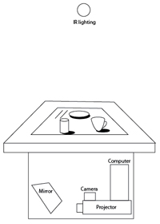

Set Up

Summary
Dinner Party is an interactive installation in which a single chair and a place set for one person seems to provide a solitary dining experience. However, the interaction offers a communication between oneself and imaginary creatures. A participant sits down at an interactive table on which are placed several objects the participant can move as if she or he is about to enjoy a meal. The objects cast virtual shadows on the tabletop with animated creatures hiding in the shadows.
Description
Among our everyday habits, having a meal is a banal routine. With tabletop technology and computer vision, however, a diner encounters a magical moment in which imaginary creatures appear during the meal. Meaningless everyday gestures become meaningful when a participant touches the point of entry into a new world. Dinner Party provides an environment in which people meet and interact with Lewis Carroll’s Jabberwocky (1872), which describes creatures hiding in the shadows. There is a chair, a table, and a table setting for one person’s dinner. The table becomes the interactive platform between the participant and the imaginary creatures that are living in the shadows of the table setting. Creatures move from the shadow of the main plate to other shadows while scattering or hiding in between. When the participant waits long enough, the creatures reveal themselves, and one can read the poem of Jabberwocky. In our solitary modern society, an imaginary friend is able to make us no longer lonely.
documentation(wiki):
http://interactivos.eyebeam.org/wordpress/?page_id=15
http://interactivos.eyebeam.org/dokuwiki/doku.php/dinner_part